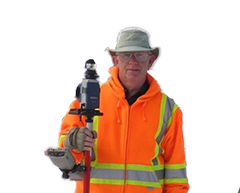
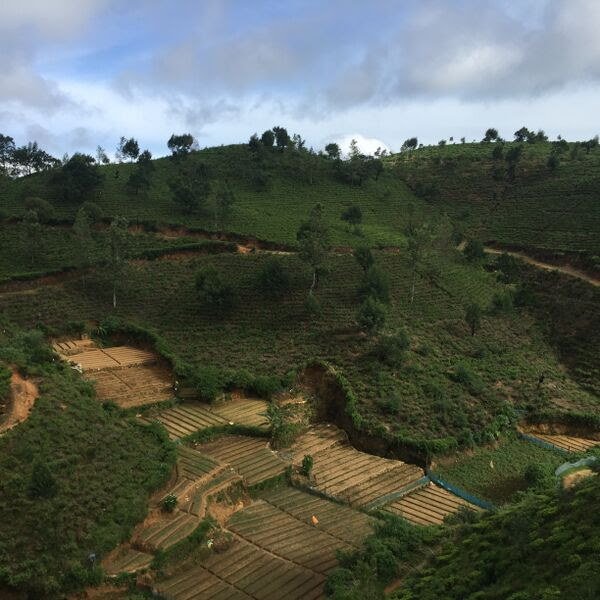

Rajakulendhrran Shaajieeshane Surveying Ltd
Staff
Shane Rajakulenedhrran
B.Sc(Geomatics)C.E.T, MIS, MSSSI
Owner and Principal
- Graduated from Sabaragmuwa University of Srilanka-2006
- Immigrated to Canada-2007
- Associate member with Association of Ontario Land Surveyors-2007-President
- Completed necessary courses required by AOLS-Ryerson and York University of Canada
- Articling with Hugh S Coutts
- International Experience-Hydrographic Surveyor-Sri Lanka, Project Surveyor-Australia
Hugh S. Coutts
B.Sc,OLS,OLIP
Manager-Cadastral Services

- Graduated from University of Toronto-1992
- Commissioned as an Ontario Land Surveyor-January 2000
- Served as a Project Manager with J.D.Barnes - 1998-2005
- Became an Owner of Coutts and Flim Surveying Ltd-2005
- Sold Coutts and Flim Surveying to Iwan B Wallace (IBW) Surveying Limited-2014
- Hugh owned about 20,000 records when he sold the business, records now owned by IBW Surveyors
- Hugh was well known in preparing reference plan and surveyors real property reports
- Master in Field to Finish concept
Additional Staff
Other Services

Copyright 2015 RS Geomatics || Website design: Codebyjo